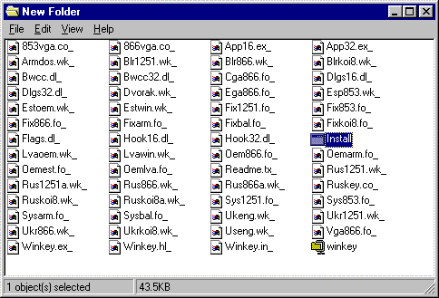
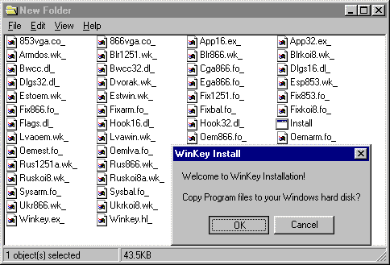
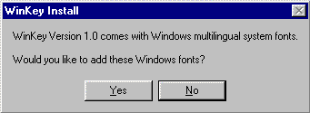
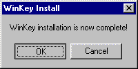

Page index / PC-MacRussian
Step Three
Step Three
Open the folder 'New Folder' by double-clicking on it.

Then double-click the 'install' icon to start installing the keyboard switcher.When the window 'Copy Program files to your Windows hard disk?'

, click 'OK'.Then you will be prompted the window 'Would you like to add these Windows fonts?'

, click 'No' on seeing this.At the window

, click on 'OK' and go to the next step. Previous Step | Next Step